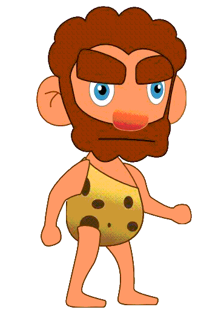

2D Character creation and animation. For dummies
Jan 22, 2013 · CommentsGeneral
Hang on a second… An art article written by a programmer? How do you dare? This is madness
Well yes, so deal with it.
Life is hard for us programmers, who can’t always find a committed artist (rare species) to work with in our projects. Yet we stand as heroes, eager to create games. It saddens me how often we see ourselves forced to produce low quality assets, I”d never call that art. Actually, it’s more appropriate to address them as utter crap. Cry no more, fellow coder, because it’s all about workflow.

Are you telling me I can create decent looking characters and environments? But I suck at drawing!
Indeed, you probably do suck at drawing, just as much as I do. However, you”d be surprised about how much can be achieved with a few tricks, the right tools and an a sensible scope. Please, do yourself a favour and abandon the idea of creating cutting edge 3D, hyper realistic characters and stick with more simple, colourful and cartoon 2D elements. With a considerably small time investment, you”ll be able to make games that don’t look as if they were created with Ye Olde Microsoft Paint. No eyes have to bleed anymore! Yay!

In order to get to where I now stand, I’ve had to go through a lengthy and painful try/error process. Maybe I can spare you some, that”d be nice, wouldn’t it? Here’s a disclaimer though, this is one of the many ways of doing things. I”m sure a real artist would kick me in the balls upon such an insult to his profession, but hey, it has worked for me so far. Just check Evolution, my Ludum Dare #24 entry. Hideous playability but decent looking for a 48h jam. I”m going to use it as an example throughout the article, feel free to grab any ideas you fancy, add your own and ditch the rest.

The initial sketch
Firstly, let’s make the assumption we”re working on a character for our game, although this could perfectly apply to environments as well. The very first step is to draw a basic sketch on paper. I”m fully aware that drawing on paper in a world of graphic tablets might strike some people as old school. Nevertheless, paper is just simpler and cheaper, a good fit for our purposes.
A rule of thumb would be to stick to basic shapes, keeping in mind at all times a lovely cartoon style. Trying to emulate reality will surely result in disaster, in turn, shamelessly making things look funny could easily save the day. Don’t worry if you can’t go any further than poor stick men, you stand a good chance by choosing minimalistic designs. Look at De Blob’s main character! It’s basically made out of stylized circles and rectangles. Yet all the critics said it’s a visually interesting game. Simplicity is your friend, embrace it and it”ll hide your lack of talent.

Once you’ve finished your sketch, it’s time for you to scan it. In the absence of a proper scanner, you can always take a picture. Don’t worry if it’s your phone’s camera, we”ll only use it as a reference so that”ll suffice.

Let’s talk vectors
Hold on, don’t go fire up Photoshop CS [insert version number here] just yet! That won’t be necessary. We”re going to adopt a vector based approach using the open source solution Inkscape. Beware! For the beautiful math behind Bezier curves shall serve us as disguise for our lame sketch. Elegant and stylized lines, simple shapes and the colourful palette. I love it.
Now it’s a good time to mention that my workflow has been highly influenced by the 2D game art for programmers blog, which provides numerous techniques to easily create assets using this sweet piece of software. Seriously, if you want to get started with this tool, check it out now. When I went through his very first tutorial, which only consists of making a funny looking alien face, I couldn’t but be amazed at the ridiculous effort/outcome ratio.

The principle behind this process only requires a little bit of practice. We programmers, love algorithms, so I”ll explain all you need to know using a Python like pseudo code snippet.
import Inkscape
import Awesomeness
# Open Inkscape
inkscape = Inkscape.newDocument()
# Prepare the awesomeness (patience and practice)
awesomeness = Awesomeness.bringItOn()
# Create a layer and import our sketch, use it as a guide
sketchLayer = inkscape.createLayer("sketch")
sketchLayer.loadBitmap("sketch.png")
# For every movable part in our character (further animation)
# Create a layer and draw it using vectors following the guide
for part in character.parts():
partLayer = inkscape.createLayer(part)
partLayer.setAlpha(0.5)
awesomeness.drawBodyPartUsingGuide(sketchLayer, partLayer)
# You should really save in between too, just in case 🙂
inkscape.saveDocument("character.svg")
Now we”re talking, aren’t we? That’s right, create a layer for every animated body part in your character, say head, torso, legs, feet, arms… The granularity depends on the desired level of movement detail. However I”d advise you to keep it simple at first. Set the layer alpha transparency to something less than 1.0 so you can see your reference underneath it. Now listen, this might sound trickier than it really is, you just need to practice. Use circle or rectangle elements to model your character’s body parts, convert them to paths and work with the Bezier nodes to adjust the shapes to the correspondent outline. If you”re just staring at the screen with no idea of what I”m talking about, please go to 2D game art for programmers, follow the first articles and you”ll see the light.

Having finished the basic outline, you can start worrying about colour. Use bright but not too intense tones and the result will be noticeably better. Things like (0, 0, 255) for blue are strictly forbidden. A good idea is to grab some image as a reference and copy the colours, or use some of the multiple web design oriented palette creators out there.
Moving onto shading. You”ll excuse me for redirecting you once more to 2D game art for programmers. There you can get ahold of some basic shading techniques, believe me, some shine here and a shadow there, will completely transform your creation. As far as I”m aware, the principle is straightforward. Position an imaginary light source in your scene and try to figure out, with a minimalistic approach in mind, how would it affect your newly born creation. Add more bezier magic and paint it slightly brighter or darker than the base. Iterate, play with it until you”re satisfied.

3, 2, 1… Action!
Depending on the game you have in mind, you might not need animations at all! In that case your character would be perfectly ready for production use (happy face). Otherwise, you”ll need to export every body part as a separate PNG file. The size doesn’t really matter but it’s preferable to overshoot the resolution rather than falling short, downscaling algorithms are decent nowadays. Rest assured, once you export the first part, Inkscape will keep the aspect ratio and proportions of all the others.
We could animate our character by moving all its parts little by little and exporting every frame by hand from Inkscape itself, although it pains me just to think about it. So tedious! Instead, we”ll use some 2D animation software to set keyframes with different poses so its tweening engine can work out the rest. Adobe Flash CS can easily do the job but if you”re looking for an inexpensive solution, Synfig studio is worth checking out. Last time I took a look, it lacked features but our requirements are more than covered with either.

Regardless of your choice, the algorithm here is simple too! We”ll explain a walking cycle as an example. Proceed as follows:
- Import each body part in a different layer.
- 1st keyframe: configure the parts so the character stays in an idle pose.
- 2nd keyframe: character with its right leg and arm aiming forward while the left arm and leg are left behind.
- 3rd keyframe: back to idle pose.
- 4th keyframe: a reverse version of the second keyframe.
- 5th keyframe: back to idle.
- Create motion tweens between keyframes, the software will fill in the gaps.

You”d be surprised at the amount of existing literature on walking cycles and I know I”m not being accurate, but this could get you started. Decomposing movement in keyframes is not easy peasy. Nevertheless, you should always try to avoid visual fidelity. Look at games like Super Mario, they”re extremely simplistic and full of metaphors. Mario’s jumping animation could have three frames and still looks good! They don’t try to model reality, they don’t need to and neither do you.

When you export the resulting animations you”ll probably get a ton of individual PNG images which will make your engine very sad.
Create your sprite sheet
Animated characters are usually stored as sprite sheets containing all frames of every animation. Offtimes, you”ll come across with several characters gathered in a big sprite sheet. This reduces file access times and makes rendering a lot faster because you don’t need to be switching between textures all the time. The renderer will draw different portions of the same texture lighting fast and everybody happy.
Does that mean I need to merge the countless PNGs by hand?
Luckily, we can count on the wonderful Libgdx TexturePacker GUI to do the job. It’s free, open source and dead easy to use it. It has a few parameters you can play with, but nothing complex. Grab it and create your awesome sprite sheet.

This is it!
Oh boy that was a long article! Since it took me a long time to figure this out, I thought it was worth sharing some of that experience with my fellow coders. It”d be truly awesome if someone left a comment saying how wrong I am along a suggestion on how to improve my art “algorithm”.
Until next time fellas!